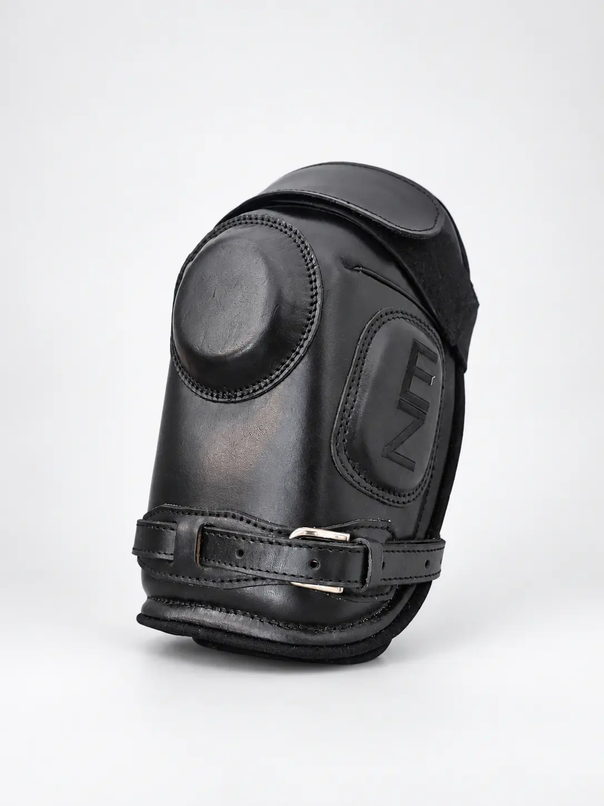
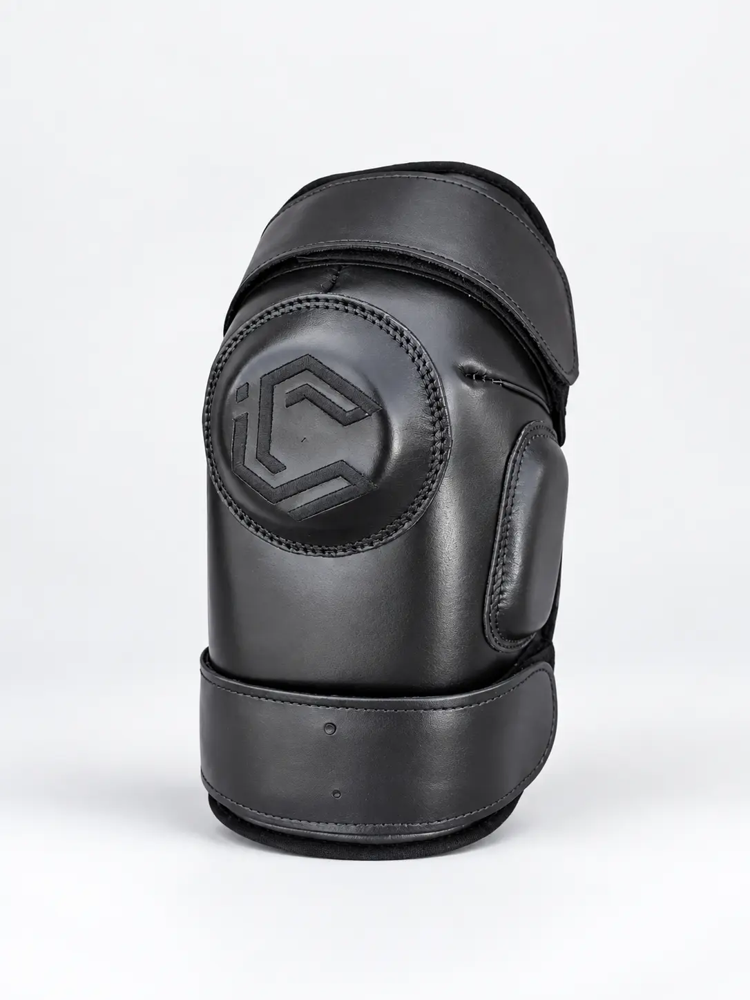
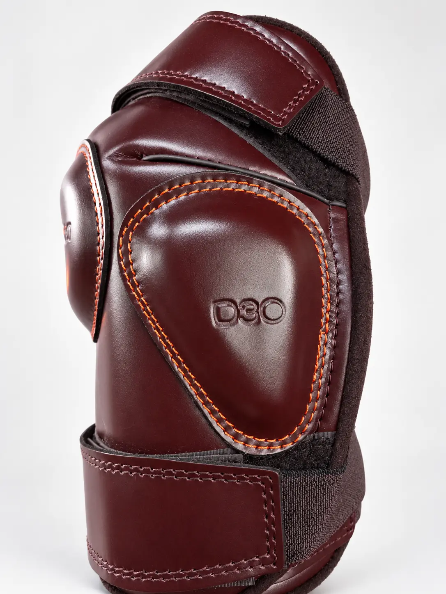

Con hebilla
Cierre: hebilla
Tres configuraciones reales de rodilleras Iconic. Diferentes sistemas de cierre y protección para responder a las preferencias de cada jugador.

Ajuste clásico con hebilla.

Cierre simple y directo.

Velcro simple con protecciones D30.
Elegí la configuración de cierre y protección que mejor acompaña tu juego.
Cierre: hebilla
Cierre: velcro
Cierre: velcro
Protección: D30